David Dominguez Hooper
Background
Sergei Mikhailovich Prokudin-Gorskii (1863-1944) photographed thousands of color pictures by recording three exposures of every scene onto a glass plate using a red, a green, and a blue filter. For the purpose of this project, I used digitized Prokudin-Gorskii glass plate images to generate clear color images by extracting each color channel and aligning them on top of each other.
Algorithm
I first tried the simple naive approach of using two for loops to go through the small .jpg images by rolling the image by an offset of [-15 to 15] pixels in both the x and y directions. I tried both SSD and NCC to calculate the best displacement for each of G and R channels that match the B channels the best. I found that SSD gives better runtimes for processing images, so I stuck to that. This worked for the small .jpg files, but took too long for the larger .tif files.
So, I used the pyramid approach to scale down the large .tif images to 1/16 scale to start off. I then used SSD as before on the 1/16th scale image to get an intital displacement. After I get the displacement, I increase the scale by a factor of two and repeat the process until we are back at the full image size. An important note is that the next displacement values for x,y are a function of the previous displacement values, i.e. x_new = (x_old)*2 + x_dis, y_new = (y_old)*2 + y_dis.
I also pre-process the image by cropping 10% of the border in order to give better results when calculating alignment.
Challenges
The first challenge I faced was when I approached the pyramid algorithm. I tried a recursive implementation but could not get a working solution. So, I tried an iterative approach and had success with that. The second challenge I had with alignment was with the Emir photo. I could not get good alignment using the base image as the blue channel. I tried using the green channel as the base and found the displacements for the blue and red channels and had success.
Small JPG Images:
Cathedral, G: (2, 5), R: (3, 12)
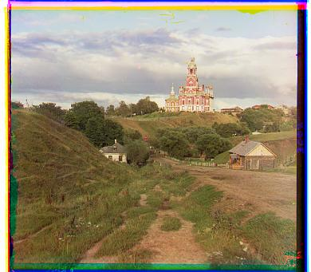
Monastery, G: (2, -3), R: (2, 3)
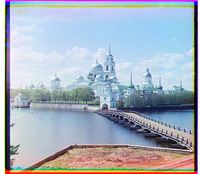
Nativity, G: (1, 3), R: (0, 7)
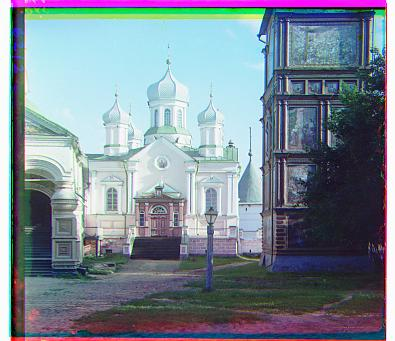
Settlers, G: (0, 7), R: (-1, 14)
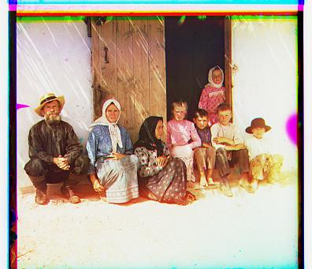
Large TIF Images (with Blue base):
Harvesters, G: (31, 79), R: (21, 143)
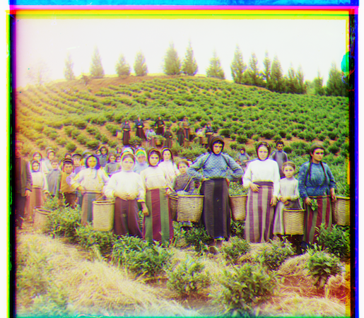
Icon, G: (31, 63), R: (31, 111)
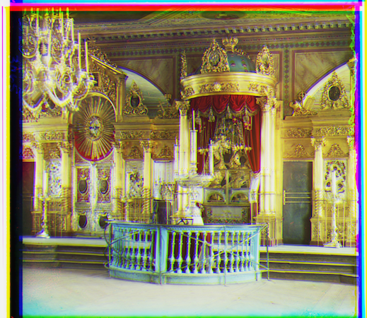
Lady, G: (18, 63), R: (16, 127)
Self Portrait, G: (42, 95), R: (47, 191)
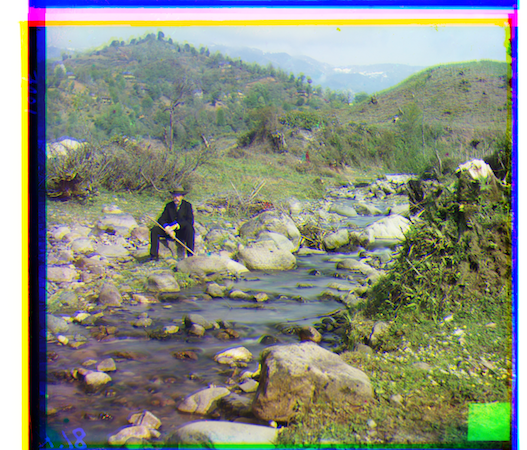
Three Generations, G: (25, 63), R: (22, 127)
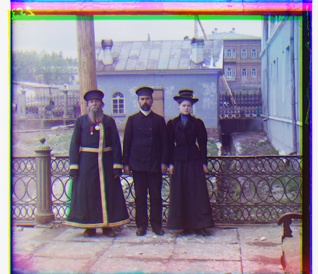
Turkmen, G: (31, 63), R: (46, 127)
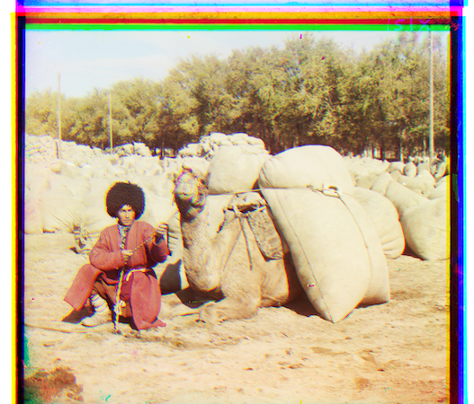
Village, G: (17, 79), R: (23, 143)
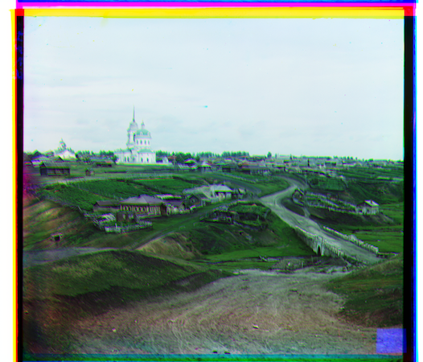
Train, G: (11, 63), R: (47, 111)
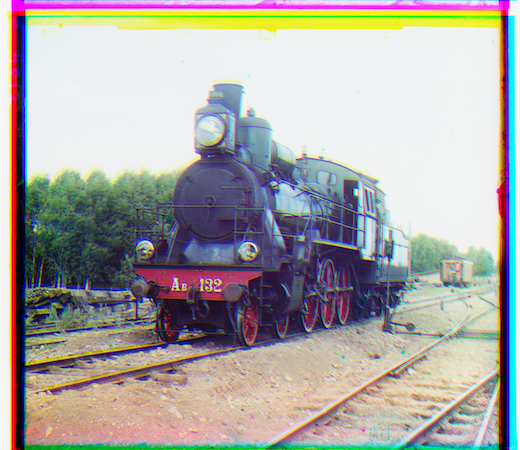
Emir, G: (40, 63), R: (-193, 104)
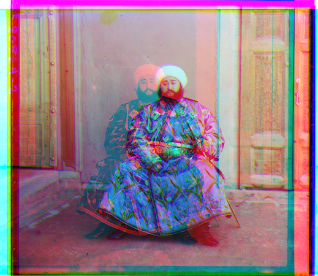
Bells and Whistles:
Large TIF Images (with Green base):
Harvesters, B: (-16, 64), R: (0, 79)
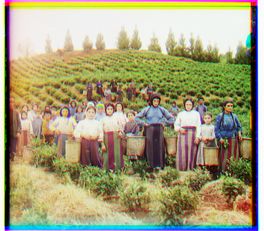
Icon, B: (-16, -48), R: (10, 63)
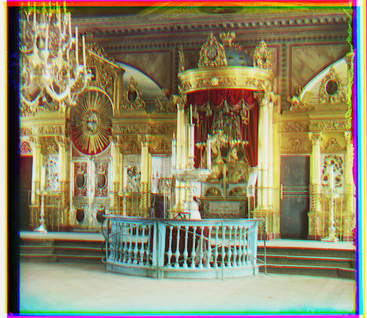
Lady, B: (-16, -48), R: (5, 79)
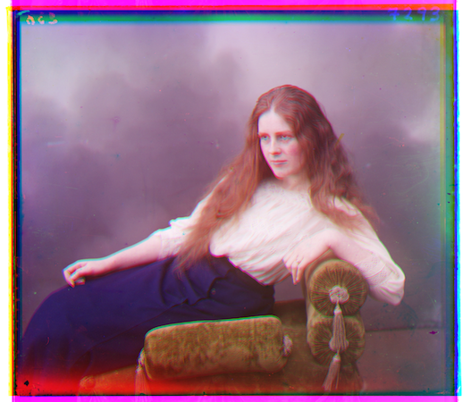
Self Portrait, B: (-32, -80), R: (10, 111)
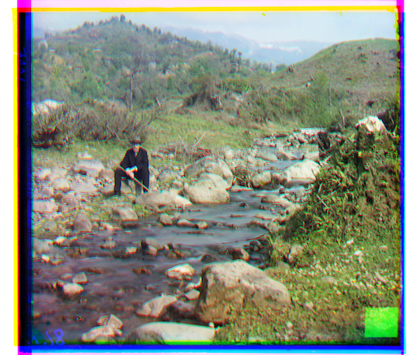
Three Generations, B: (-16, -48), R: (0, 79)
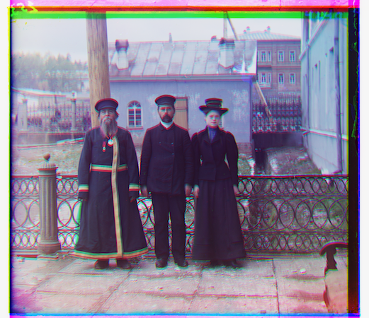
Turkmen, B: (-16, -48), R: (11, 79)
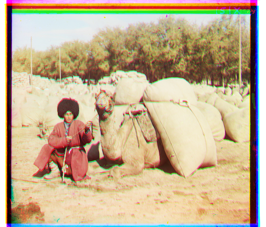
Village, B: (-6, -64), R: (21, 79)
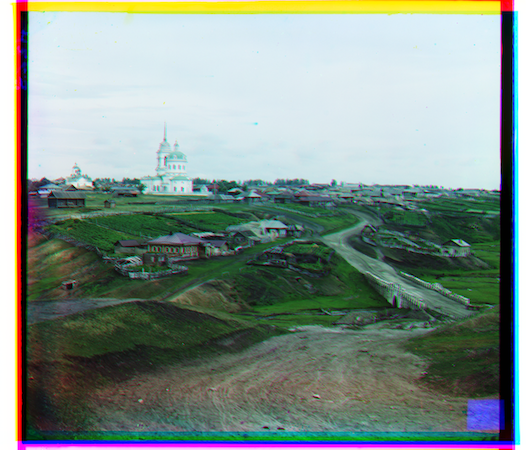
Train, B: (0, -48), R: (47, 63)
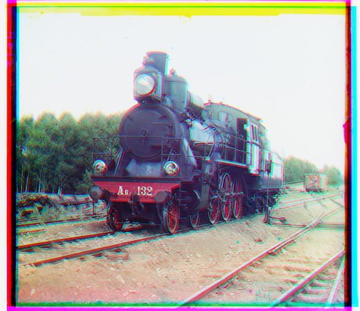
Emir, B: (-32, -48), R: (-31, 63)
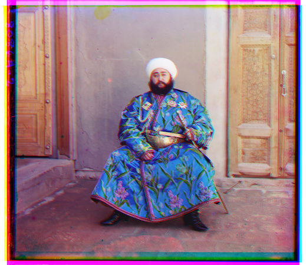
_(32.127)_.png)